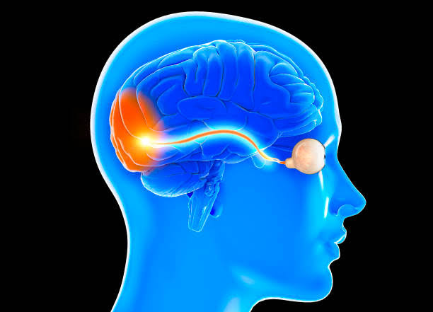
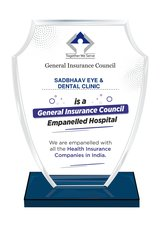

Explore our eye services: Cataract Surgery, LASIK Eye Surgery, Glaucoma Treatment, Retina Treatment, Diabetic Retinopathy, Pterygium Treatment, Dry Eye Treatment, Squint Treatment, Paediatric Eye Checkup, Corneal Topography, Eye Injury & Emergency, Phakic IOL (ICL), LASIK vs ICL, Oculoplasty, Computer Vision Syndrome, and Perimetry.
Neuro-ophthalmology deals with vision problems that start in the optic nerve, the nerves that move the eyes, or the parts of the brain that handle vision, rather than in the eye itself. The eye may look normal, yet vision, eye movements or the pupils are affected.

Not every one of these is serious, but each needs examination rather than "wait and see".
Treatment depends on the cause: for example steroids for some kinds of optic neuritis and for giant cell arteritis, treatment of raised pressure in the head, prisms or patching for double vision, and control of blood pressure, diabetes and cholesterol after an optic nerve stroke. Many nerve palsies from diabetes or blood pressure recover over 3 to 6 months. We explain what to expect and coordinate care with your other doctors.
Sudden vision loss, new double vision with headache or a drooping lid, vision loss with jaw pain or scalp tenderness over 50, or weakness, numbness or difficulty speaking with any vision change: go to an emergency department or come the same day. Some of these are stroke warnings.
Dr. Dhaval Patel, MD (Ophthalmology, AIIMS New Delhi), examines visual symptoms carefully to find out whether the cause lies in the eye or further along the vision pathway, and arranges scans and specialist care when needed. Read about visual field testing at Sadbhaav or Dr. Patel's credentials and experience.
Experiencing sudden vision changes, double vision, or unusual headaches with visual symptoms? Book a consultation or message us on WhatsApp — some of these symptoms are worth same-day attention.
Where healthy eyes and confident smiles come together.
Eye care by an AIIMS-trained ophthalmologist; dental care by an MDS endodontist — both dedicated specialists in their respective fields.
Dr. Dhaval Patel has practised ophthalmology since his residency at AIIMS, New Delhi, began in 2011; Dr. Dhara Patel has been an endodontist since 2016.
Our staff communicates comfortably in both Gujarati and English, so every step of your visit — from reception to aftercare instructions — is easy to follow.
Dr Dhaval Patel has conducted many eye camps in Africa and visits yearly for the same.
Medically reviewed by Dr Dhaval Patel, MD Ophthalmology (AIIMS, New Delhi). Last reviewed: November 2026. This page is general information and does not replace an examination.

Now GIC empanelled: cashless eye treatment with health insurers across India
Sadbhaav is empanelled with the General Insurance Council, so policyholders of its member general and health insurance companies can ask for cashless treatment for eligible eye care such as cataract surgery, subject to policy terms and pre-authorisation.